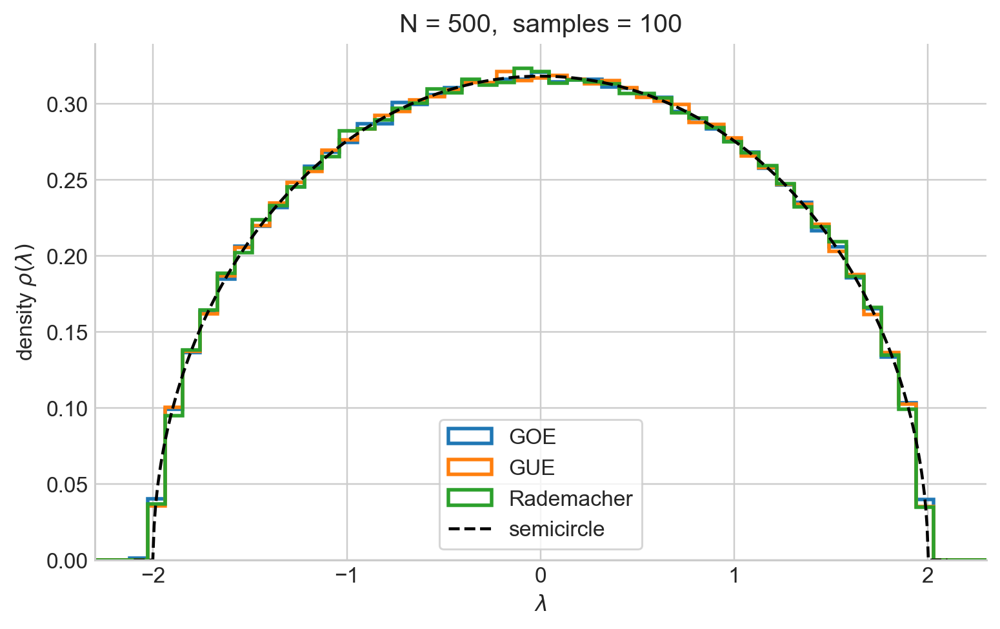

Random Matrix Theory and Applications
A numerical study of eigenvalue densities, level-spacing statistics and covariance matrices, emphasizing applications to machine learning, quantitative finance, and the SYK model.
Python · NumPy · SciPy · Matplotlib